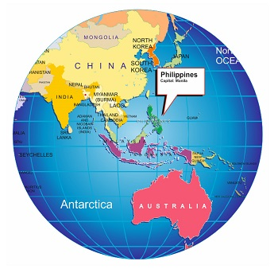

Welcome to the Wonderful Weirdness of Margaret Cabuenas!
Just a heads up, I might be running on fumes (code fumes, that is), a Clinical Psychology major clinging to life (and sanity) by the keyboard. But hey, that just fuels the fire for endless learning, right? This little corner of the internet is where my passions collide: psychology, dabbles in 3D design (Solidworks, AutoCAD, anyone?), a sprinkle of Python, and a whole lot of...well, everything else! Yoga keeps me grounded, embroidery lets me express my inner artist (somewhat), and K-dramas provide the much-needed fuel for those all-nighters. ‍♀️ So, come explore the wonderful weirdness that is me! Whether you're a fellow psych enthusiast, a techie kindred spirit, or just here for the K-drama recommendations, dive in and let's get weird (in the best way possible, of course).
Philippines! Have a look aroundüòÑ
Buckle up for an island paradise unlike any other! The Philippines, with over 7,000 islands (yes, you read that right, counting is hard!), boasts stunning beaches, vibrant coral reefs, and a warmth that goes beyond the tropical sun. Beyond the postcard beauty, we're home to the world's longest navigable underground river (Puerto Princesa!), a jeepney culture as colorful as our personalities, and a surprising 170+ languages, proving we have a word for everything (even if it takes a while to find it!).
